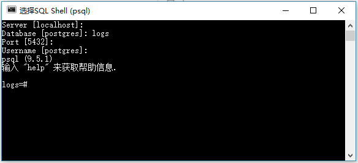
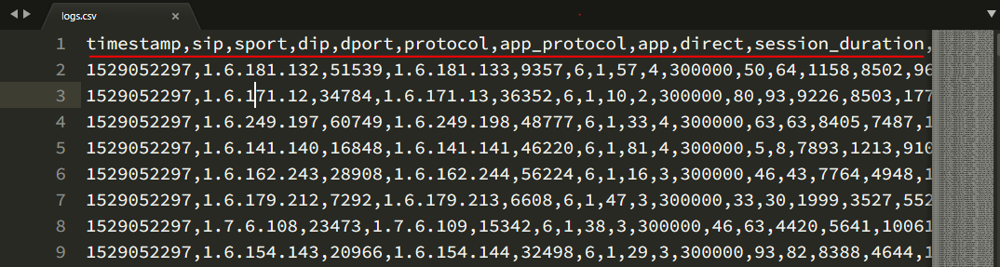

Go to Github Home Page 创建数据库需要用到postgreSQL自带的psql命令行工具，如图所示： 首先创建数据库：1234create database logs;-- 删除数据库： -- drop database logs; 创建数据表创一个表，表结构应该可以完全容纳csv的数据结构。首先csv文件结构大致如下： scv表头名应该与数据库字段名一致。 创建数据表如下：123456789101112131415161718192021222324CREATE TABLE public.logs( id serial NOT NULL, timestamp character varying(100) NOT NULL, sip character varying(100) NOT NULL, sport numeric(6, 0) NOT NULL, dip character varying(100) NOT NULL, dport numeric(6, 0) NOT NULL, protocol character varying(100) NOT NULL, app_protocol character varying(100) NOT NULL, app character varying(100) NOT NULL, direct character varying(100) NOT NULL, session_duration numeric(11, 0) NOT NULL, up_packets numeric(11, 0) NOT NULL, down_packets numeric(11, 0) NOT NULL, up_flow numeric(11, 0) NOT NULL, down_flow numeric(11, 0) NOT NULL, packets numeric(11, 0) NOT NULL, s_region character varying(100) NOT NULL, d_region character varying(100) NOT NULL, CONSTRAINT public_logs_pkey PRIMARY KEY(id));-- 删除一个表： -- drop table public.logs; 导入csv123## 只能是 postgres 或者其它超级管理员用户才能执行 copy 命令COPY public.logs(timestamp,sip,sport,dip,dport,protocol,app_protocol,app,direct,session_duration,up_packets,down_packets,up_flow,down_flow,packets,s_region,d_region) from 'F:\\logs.csv' WITH CSV HEADER; ← 上一篇 下一篇→ To show LiveRe comment, please use JavaScript 目录 1. 创建数据库2. 创建数据表3. 导入csv